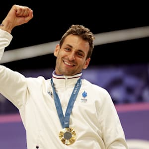
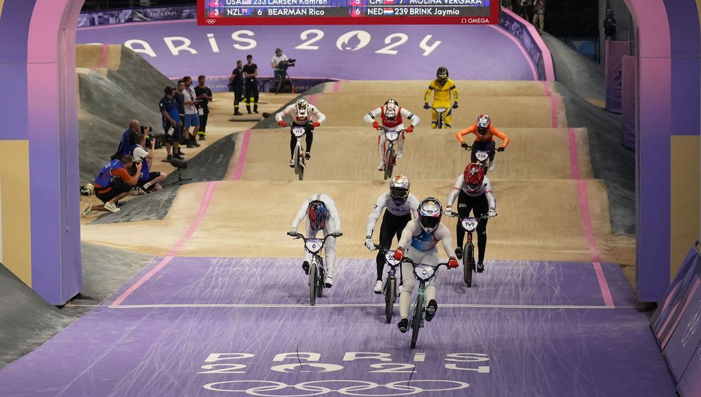
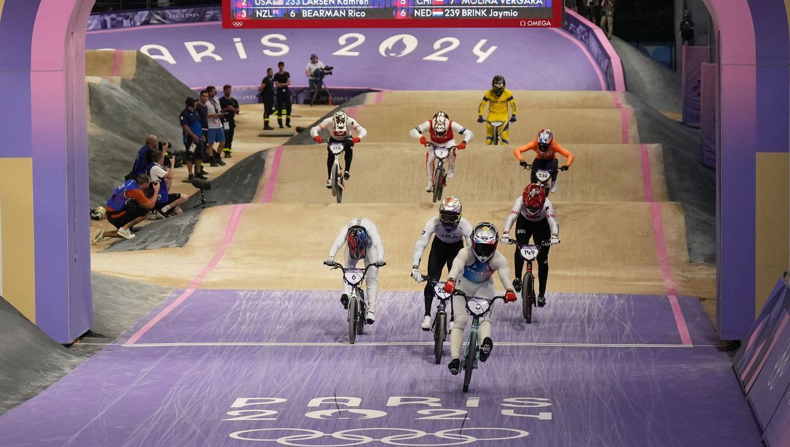
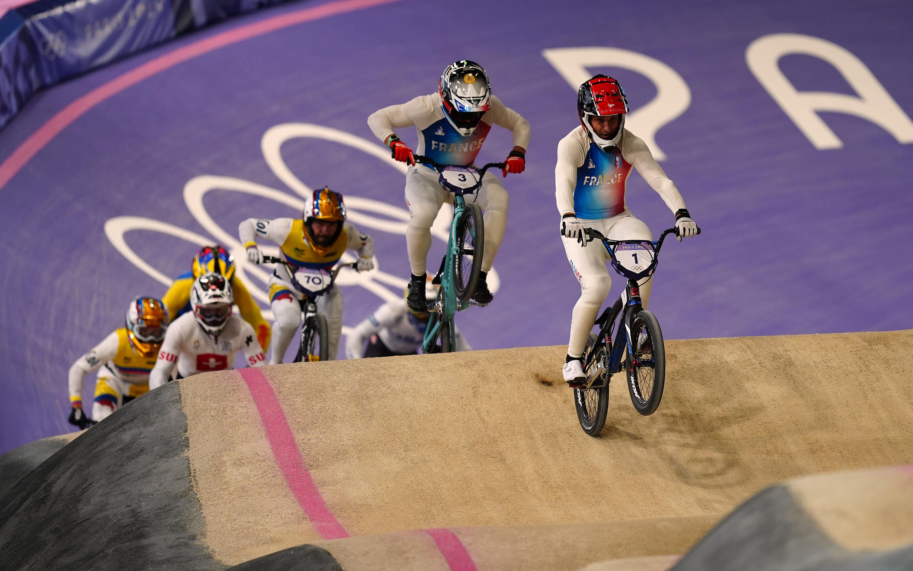
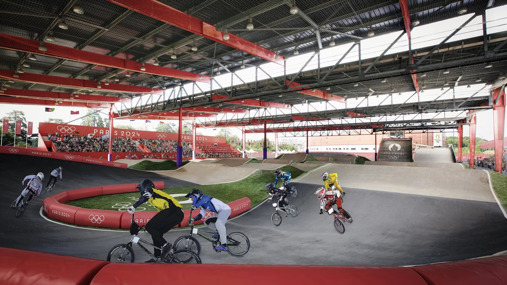

Année de naissance : 1991
Pays de naissance : FRANCE
BIOGRAPHIE
Joris Daudet, né le 12 février 1991 à Saintes, est un cycliste français spécialisé en BMX. Passionné de vélo dès son plus jeune âge, il s'entraîne avec détermination pour atteindre l'élite mondiale. Grâce à son talent et à sa persévérance, il remporte plusieurs titres nationaux et internationaux, devenant une figure emblématique du BMX français. En dehors des pistes, Joris s'engage dans la promotion du sport auprès des jeunes, sensibilisant à l'importance d'une pratique sportive régulière. Il est également ambassadeur pour plusieurs marques et initiatives sportives.
PARTICIPATION AUX JEUX
Joris Daudet a participé à plusieurs éditions des Jeux Olympiques, marquant l'histoire du BMX
par ses performances remarquables. À Tokyo en 2020, il a décroché une médaille d'argent,
confirmant son statut de leader mondial. À Paris 2024, il est attendu comme l'un des favoris,
avec des ambitions clairement affichées pour la médaille d'or.
Lors des Jeux de Londres 2012, il a terminé à la cinquième place, montrant déjà un potentiel
prometteur. En 2016 à Rio, il atteint la troisième marche du podium avec une médaille de bronze.
Ses résultats illustrent une progression constante et une maîtrise de son art.
Participations à 4 Jeux Olympiques
| Médailles | |||
|---|---|---|---|
| Or 🥇 | Argent 🥈 | Bronze 🥉 | |
| Jeux de Paris 2024 |
1
Discipline : BMX Racing Score : 95 points Temps : 34.2 secondes |
0 | 0 |
| Jeux de Tokyo 2020 | 0 |
1
Discipline : BMX Racing Score : 90 points Temps : 35.7 secondes |
0 |
| Jeux de Rio 2016 | 0 | 0 |
1
Discipline : BMX Racing Score : 85 points Temps : 36.9 secondes |
| Jeux de Londres 2012 | 0 | 0 | 0 |
ACTUALITÉS
Nouveaux records
En 2023, Joris a établi un nouveau record lors des Championnats du monde de BMX en France, avec un temps de 34,7 secondes sur une piste de 400 mètres. Ce record le positionne comme un sérieux prétendant pour les compétitions internationales à venir.
Résultats des compétitions récentes
En 2023, Joris Daudet a brillé en Coupe du Monde en décrochant la 1ère place à Manchester et la 2ème place à Berlin, a remporté une médaille d'argent au Championnat d'Europe à Glasgow, et s'était illustré en 2022 avec une 3ème place au Tournoi International en Australie.
 

MOMENTS FORT DE SA CARRIÈRE
Parmi les moments les plus mémorables de la carrière de Joris, sa victoire spectaculaire
lors du Championnat du monde 2011 reste gravée dans les mémoires. Face à une concurrence
acharnée, il a démontré une force mentale exceptionnelle pour décrocher la médaille d'or.
Un autre moment clé fut sa performance aux Jeux Olympiques de Rio en 2016, où malgré une chute
lors des phases qualificatives, il a réussi à se hisser jusqu'en finale pour remporter la
médaille de bronze.


RÉSEAUX
Suivez Joris Daudet sur ses réseaux sociaux pour rester informé de ses entraînements, compétitions et projets :